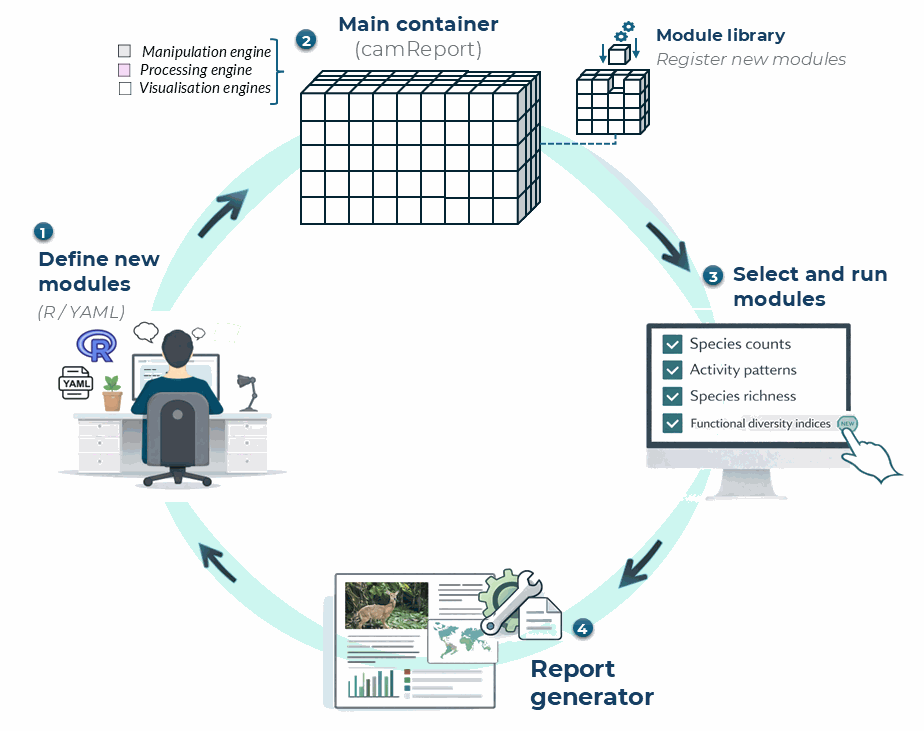
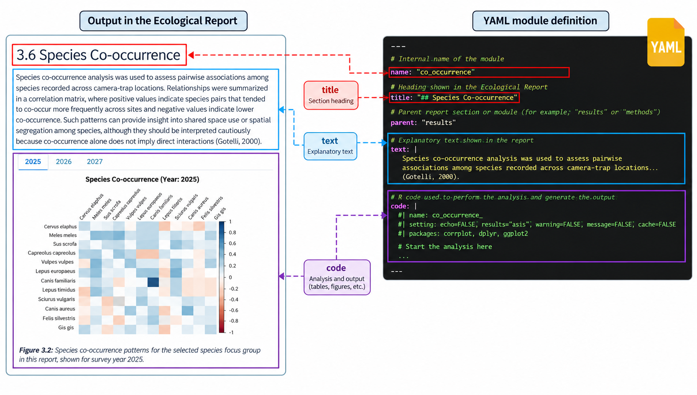

Managing and extending report modules
The Ecological Report is built from separate report sections, here referred to as modules. Each module is a small report component that can contain explanatory text, R code, or both. This modular structure allows users to extend the report by adding new sections, modifying existing ones, or changing the order in which sections appear.
A new module is defined in a YAML file and then registered with
camtrapReport using add_Module(). After the
module has been added, it is useful to test it before generating the
full report.
Work in a writable project copy of the registry, not the installed package directory: package updates replace installed files. Modules contain real R code, including expressions embedded in their narrative text. Inspect their code, package requirements, network requests, and file operations, and only run modules from sources you trust. A profile selects modules; it does not sandbox their execution.
Editing existing modules
The narrative shown in a report comes from YAML text
fields, R code that prints text, and metadata/text stored in the
camReport object. Existing modules can be customised. For a
change to the current report only, select the sections first and then
update the attached section:
sections(cm, "introduction")
updateReportSection(
cm,
section = "introduction",
text = "This report documents the camera-trap survey at our study site."
)
report(
cm,
filename = file.path(tempdir(), "edited-introduction.html"),
view = FALSE
)This replaces the section’s static text; any retained code can still
print additional narrative. updateReportSection() can also
replace a code chunk. It changes the attached report section, rather
than the installed YAML file. Apply such edits after selecting modules:
passing a profile to report() rebuilds the
attached selection from the module pool and can replace edits to the
current tree.
To share a reusable YAML variant, copy a bundled YAML to your
project, give it a unique filename and internal name (for
example, introduction_project), edit its text
and/or code, and add it to your writable registry using the
workflow below. Keep parent names consistent and test the edited module
before rendering. A copied registry is not loaded automatically by
camData() or setup();
add_Module() returns the parsed module so you can attach it
explicitly to the current object.

Figure 1. Modular workflow for defining, registering, selecting, and running report modules in camtrapReport.
Figure 1 summarises how new modules are added to the report workflow.
A module can be defined using R code or a YAML file, registered in the
module library, added to the main camReport object, tested
separately, and then included when generating the final Ecological
Report.
1. List existing modules
Before adding a new module, check which modules are already available in the package.
# List all available modules
list_Modules()
# Show all section names used in the report
section_names()The table form, list_Modules(tree = FALSE), includes a
formats column. Its value is html,
pdf, or both. Report generation uses this
value to omit a module that is incompatible with the requested output
and also omits any child whose parent is unavailable. Existing
three-column registries remain valid and default to
both.
2. Create a new module YAML file
A module can be written as a YAML file. Figure 2 illustrates how the main components of a YAML module correspond to the content generated in the Ecological Report.

Figure 2. Relationship between the main components of a YAML report module and its output in the Ecological Report.
The example below defines a simple module called
species_table, which adds a species summary table to the
Ecological Report.
Create a file called species_table.yml in a writable
project directory. The example below assumes that you have opened the
intended R project and have the optional here package
installed. Check the root printed by here::here() before
creating a persistent module folder there. See the here project-root
guidance if it does not identify the intended project.
Alternatively, set project_dir to an explicit writable
project path. These project-specific steps are shown for interactive use
and are not executed when the vignette is built.
# Verify this is the project where you want to retain your modules:
here::here()
project_dir <- here::here("camtrapReport-modules")
dir.create(project_dir, recursive = TRUE, showWarnings = FALSE)
module_file <- file.path(project_dir, "species_table.yml")Save the following YAML content at module_file before
running the next step.
name: species_table
title: "Species summary table"
parent: "results"
formats: "both"
text: "This section provides a summary of the species detected in the camera-trap dataset, including their taxonomy and total number of captures."
code: |
#| echo: false
#| message: false
#| warning: false
species_table <- object$data_status$Species$Table
if (!is.null(species_table) && nrow(species_table) > 0) {
knitr::kable(
species_table,
caption = "Species detected in the camera-trap dataset."
)
} else {
cat("No species table is available for this dataset.")
}3. Add the new module
Module registries that are changed by users must be kept outside the
installed package directory. Start by copying the bundled registry to a
writable project directory, then add the new module to that copy. In
this example, species_table is placed before the
richness section.
# Create a writable project-level module registry once
bundled_modules <- system.file(
"reportSections",
package = "camtrapReport"
)
module_dir <- file.path(project_dir, "reportSections")
if (!dir.exists(module_dir)) {
dir.create(module_dir)
file.copy(
list.files(bundled_modules, full.names = TRUE),
module_dir,
recursive = TRUE
)
}
# Add a new module from a YAML file
added <- add_Module(
x = module_file,
before = "richness",
test = FALSE,
object = cm,
formats = "both",
dir = module_dir
)
# Check whether the module has been added
list_Modules(dir = module_dir)You can change before = "richness" to another section
name if you want the new module to appear elsewhere in the report.
The formats argument can be omitted when the YAML
contains a top-level field such as formats: "html"; if
neither is supplied, the module defaults to both.
move_Module(..., formats = "pdf") can update the
compatibility value while repositioning an existing module. Removing and
restoring modules preserves the value in the trash index.
4. Install module dependencies
When a module is added with add_Module(), its package requirements are registered automatically. Use install_all() to install any missing packages required by the bundled and user-added modules.
# Discover and install all dependencies declared by all modules
install_all()Inspect dependencies without installing
Read a module’s package declarations before deciding what to install. This example only prints the declarations in your copied YAML files:
yaml_files <- list.files(
module_dir,
pattern = "\\.ya?ml$",
full.names = TRUE
)
declarations <- lapply(yaml_files, function(file) {
grep(
"^\\s*#\\|\\s*packages:",
readLines(file, warn = FALSE),
value = TRUE
)
})
names(declarations) <- basename(yaml_files)
declarations[lengths(declarations) > 0L]
# Check selected names from a declaration without installing or attaching:
pkgs <- c("ggplot2", "dplyr")
pkgs[!vapply(pkgs, requireNamespace, logical(1), quietly = TRUE)]install_all() scans the bundled/registered module
requirements, not every arbitrary folder containing YAML files. When
working with a separate copied registry, inspect its declarations and
explicitly supply additional package names through
install_all(pkgs = ...) if needed.
5. Add the module to the current camReport object
The object returned by add_Module() contains the parsed
module. Attach it to the current report object and confirm that it
appears in the report catalogue.
cm$addReportObject(added$module)
listReportSections(cm)6. Test the new module
Before generating the full report, test only the new module. This is useful for checking whether the YAML structure, text, and R code work correctly.
# Test the new module only
testSection(
added$module,
object = cm,
view = TRUE
)If the module opens correctly in the browser, it can be included in the full report.
7. Generate the full report
After testing, generate the full Ecological Report with the new
module included. The resolved output and .Rmd paths are
displayed first. Existing files are protected by default: choose a new
filename, or explicitly use overwrite = TRUE when
replacement is intended. HTML and PDF files with the same stem share an
.Rmd source, so use different stems to retain both. Supply
an existing output directory; an invalid directory raises an error
rather than silently falling back to the working directory.
# Generate the full report
report(
cm,
filename = file.path(tempdir(), "project-ecological-report.html"),
view = TRUE
)This workflow allows users to extend the Ecological Report with project-specific outputs, additional summaries, new figures, or custom interpretation sections.
The attachment above affects the current report tree. It does not add
the module to a named profile’s source pool. Render that tree without a
profile argument; applying a profile again replaces the
current selection. Retain the YAML file and repeat its
registration/attachment when constructing a new object. Re-running
setup() reloads the bundled module pools.
Defining and sharing report profiles
All YAML modules remain in their report or status module pool. A
profile stores only an ordered selection from those pools, so
alternative introductions, methods, or result modules can coexist
without all appearing in every report. Each module still needs a unique
internal name within its pool.
See the dedicated Report profiles guide for a complete reusable example and the difference between module pools and the current attached report tree.
project_profile <- reportProfile(
name = "project",
description = "A project-specific ecological and status report",
report = c(
"report::introduction",
"report::methods",
"report::results",
"report::appendix"
),
status = c(
"status::abstract",
"status::availability"
)
)
add_profile(cm, project_profile)
report(
cm,
profile = "project",
filename = file.path(tempdir(), "profile-project-report.html")
)
status(
cm,
profile = "project",
filename = file.path(tempdir(), "profile-project-status.html")
)The parent column can override a module’s YAML parent
for one profile. For example, this places selected status modules below
the ecological appendix without editing their source files:
main_entries <- data.frame(
source = c("report", "report", "status", "status"),
module = c("introduction", "appendix", "spatial", "temporal"),
parent = c(NA, NA, "appendix", "appendix")
)
combined_profile <- reportProfile(
name = "combined",
report = main_entries
)Profiles are ordinary YAML files and can be versioned or shared beside custom module files. Reading a profile does not execute its modules.
profile_file <- file.path(project_dir, "project-profile.yml")
write_profile(project_profile, profile_file)
shared_profile <- read_profile(profile_file)
# Replace the profile named "project" registered in the previous example.
add_profile(cm, shared_profile, overwrite = TRUE)Reordering, removing, and restoring modules
Module changes can be inspected and reversed before anything is deleted permanently:
# Validate active module definitions and inspect the hierarchy
list_Modules(validate = TRUE, dir = module_dir)
# Move a module within the report hierarchy
move_Module(
"species_table",
after = "captures",
parent = "results",
dir = module_dir
)
# Move a module and its children to the module trash
remove_Module("species_table", recursive = TRUE, dir = module_dir)
# Inspect active and deleted modules
list_Modules(include_trash = TRUE, dir = module_dir)
# Restore a removed module
restore_Module("species_table", test = TRUE, dir = module_dir)empty_trash() permanently deletes trashed module
definitions and should only be used after confirming that the YAML files
are backed up elsewhere. Changes to a copied registry do not
automatically update a camReport object. Attach the
returned module explicitly when adding one, confirm the current
selection with listReportSections(cm), test affected
modules, and generate the report in a new output file. Review the
resulting text, tables, figures, warnings, and citations as carefully as
any manually written scientific analysis.